以后会更正排版
用Python实现爬虫小试手
参考：https://www.cnblogs.com/Axi8/p/5757270.html
读取页面源码：
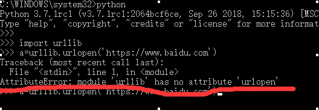
直接出现报错
网上搜的错误原因，参考：https://www.jb51.net/article/109508.htm
情况就是在python3版本已经把urllib2,urlparse等五个模块都整合进了urllib中。
又出现问题
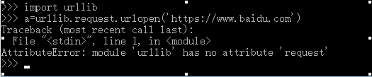
发现原来python在引包的时候，它的子包不会全部引入。那这样试试：
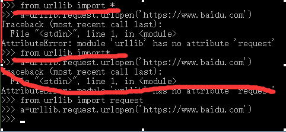
import*居然也导入不进来，然后又看了import机制。参考：https://www.cnblogs.com/gaowengang/p/8543840.html
cnblogs.com/yan-lei/p/7828871.html
没发现任何问题。可能是这个urllib的包本身的问题。
参考：https://blog.csdn.net/py_young/article/details/80638626
看来这个整合包的时候肯定有特殊处理，以后再剖析，时间原因，赶紧接着干。
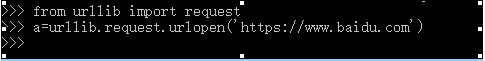
老老实实的导入。
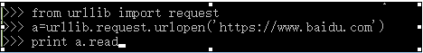
回车
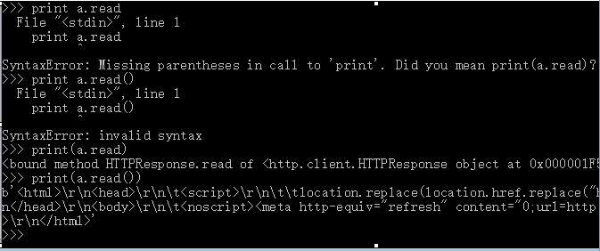
太着急，输错了好几次。。。最后打印的a.read()结果就是想要的。这个网页的页面代码。。
然后下面学习如何进一步处理并获取图片地址
首先是正则表达式。参考：http://www.runoob.com/regexp/regexp-syntax.html
先确定一下要获取图片地址的连接：
https://image.baidu.com/search/index?tn=baiduimage&ct=201326592&lm=-1&cl=2&ie=gb18030&word=%D7%D4%C5%C4%C3%A8&fr=ala&ala=1&alatpl=adress&pos=0&hs=2&xthttps=111111就这个了，找到图片url的格式。
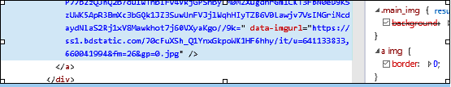
精心写出正则表达式 zz = r'data-imgurl="(.+?\.jpg)"'
输入执行
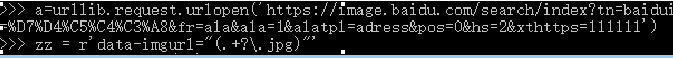
用compile处理一下参考：https://www.cnblogs.com/nomorewzx/p/4203829.html
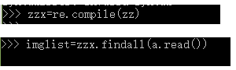
发现报错
原来是编码问题参考：https://blog.csdn.net/tzs_1041218129/article/details/52228905
需要用.decode('utf-8')
下面重新写在脚本里：
运行后抓取有问题。。。推测是百度做了防爬处理。只能换个地址--：
另外用到了下载urlretrieve，参考：https://blog.csdn.net/drdairen/article/details/61934598
重新改了一下，这个地址的图片连接还挺有意思，没有http：，古在下载的时候给它加上了。
 运行：
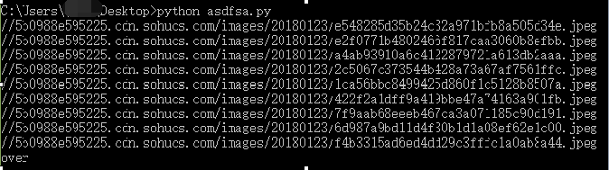
没指定保存地址，所以图片下载到了文件所在目录：
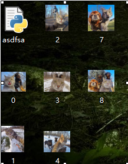
好了以上最基本的爬虫已经实现了，但是爬的太近，下面是进一步进阶：
参考：https://www.cnblogs.com/Axi8/p/5773269.html
学习了下Xpath，参考：www.jikexueyuan.com/course/902_2.html?ss=1
但我决定还是用正则来搞：
根据参考可见主要是让爬虫找到包含带图片页面的页面地址（连接）：
那么我分析了一下，如图先对百度图片搜索这一页的所有链接进行获取：
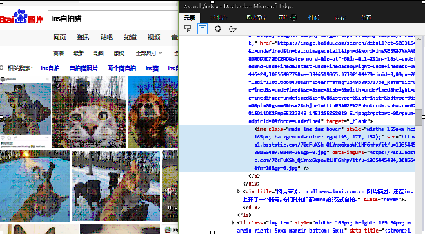
修改一下之前的代码：
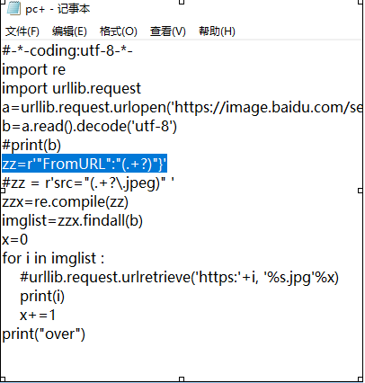
这里需要注意一下，这个正则表达式是仔细的观察print（b）的打印结果后得出的
打印出的与浏览器的不一样！！，要以打印出的内容为准。
执行后得到很多地址：
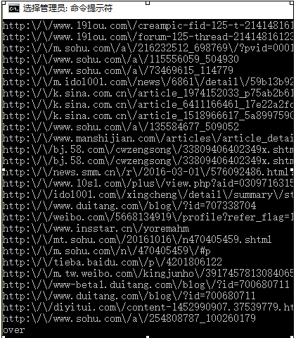
我们要对这些地址的图片进行爬取：
对代码进行修改并精炼：
为了对连接的“\”进行处理掉，参考了translate()方法：http://www.runoob.com/python3/python3-string-translate.html
参考又出现版本问题，菜鸟上的不行（以后我去菜鸟上去写上）。参考：https://www.cnblogs.com/wushuaishuai/p/7687384.html
终于成功。
期间还研究了str在python中，参考有https://blog.csdn.net/jslijb/article/details/79310167
http://www.cnblogs.com/yangmingxianshen/p/7990102.html
https://blog.csdn.net/doudoudouzoule/article/details/85335268
https://www.cnblogs.com/chengd/p/7491041.html
。。。因为我发现str在python3中就像一个关键字一样，他有字符串的方法，他很可能是string类型的一个特殊对象。。然后他跟bytes啥的也有关，编码问题decode啥的以后再研究。。
以下是整理好的代码：
注：参考https://blog.csdn.net/eric_sunah/article/details/11301873
https://blog.csdn.net/qq_40309183/article/details/80716641
在爬的时候加了UserAgent
还有一些异常处理。。
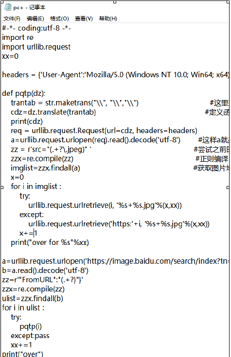
最终运行结果：
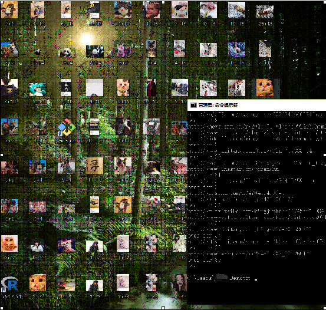
还抓到了一些奇怪的东西，。差点撑爆桌面 幸亏我手速够快及时拖到回收站一些，看来还是得放入文件夹才行。
整体结果还算基本满意
，爬虫的初步研究告一段落了，以后再次深入研究时。这篇文章就当笔记，方便回顾用。
over
后记，上面去除‘\’时方法太笨，肯定有方法快速解决，因为浏览器就能识别这个带\的url
另外图片完全可以放文件夹里以免撑爆桌面，用os.mkdir('文件夹名')可以让程序去创建一个文件夹。
运行：
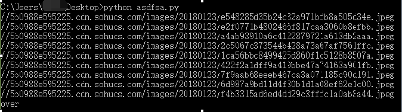
没指定保存地址，所以图片下载到了文件所在目录：
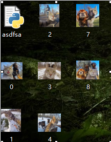
好了以上最基本的爬虫已经实现了，但是爬的太近，下面是进一步进阶：
参考：https://www.cnblogs.com/Axi8/p/5773269.html
学习了下Xpath，参考：www.jikexueyuan.com/course/902_2.html?ss=1
但我决定还是用正则来搞：
根据参考可见主要是让爬虫找到包含带图片页面的页面地址（连接）：
那么我分析了一下，如图先对百度图片搜索这一页的所有链接进行获取：
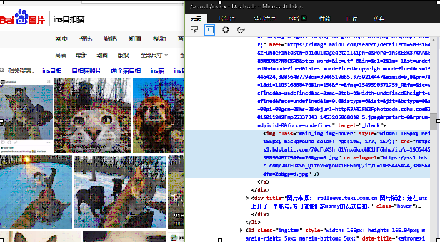
修改一下之前的代码：
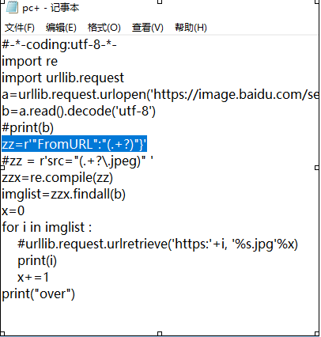
这里需要注意一下，这个正则表达式是仔细的观察print（b）的打印结果后得出的
打印出的与浏览器的不一样！！，要以打印出的内容为准。
执行后得到很多地址：
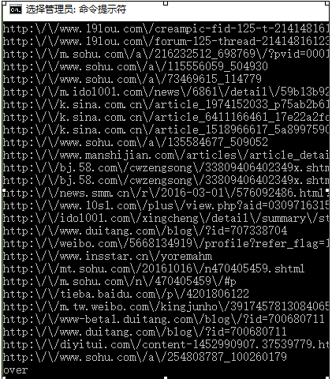
我们要对这些地址的图片进行爬取：
对代码进行修改并精炼：
为了对连接的“\”进行处理掉，参考了translate()方法：http://www.runoob.com/python3/python3-string-translate.html
参考又出现版本问题，菜鸟上的不行（以后我去菜鸟上去写上）。参考：https://www.cnblogs.com/wushuaishuai/p/7687384.html
终于成功。
期间还研究了str在python中，参考有https://blog.csdn.net/jslijb/article/details/79310167
http://www.cnblogs.com/yangmingxianshen/p/7990102.html
https://blog.csdn.net/doudoudouzoule/article/details/85335268
https://www.cnblogs.com/chengd/p/7491041.html
。。。因为我发现str在python3中就像一个关键字一样，他有字符串的方法，他很可能是string类型的一个特殊对象。。然后他跟bytes啥的也有关，编码问题decode啥的以后再研究。。
以下是整理好的代码：
注：参考https://blog.csdn.net/eric_sunah/article/details/11301873
https://blog.csdn.net/qq_40309183/article/details/80716641
在爬的时候加了UserAgent
还有一些异常处理。。
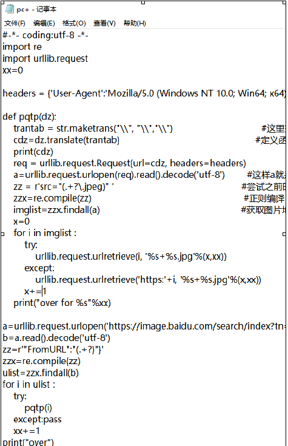
最终运行结果：
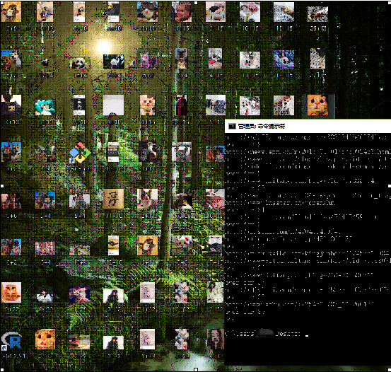
还抓到了一些奇怪的东西，。差点撑爆桌面 幸亏我手速够快及时拖到回收站一些，看来还是得放入文件夹才行。
整体结果还算基本满意
，爬虫的初步研究告一段落了，以后再次深入研究时。这篇文章就当笔记，方便回顾用。
over
后记，上面去除‘\’时方法太笨，肯定有方法快速解决，因为浏览器就能识别这个带\的url
另外图片完全可以放文件夹里以免撑爆桌面，用os.mkdir('文件夹名')可以让程序去创建一个文件夹。